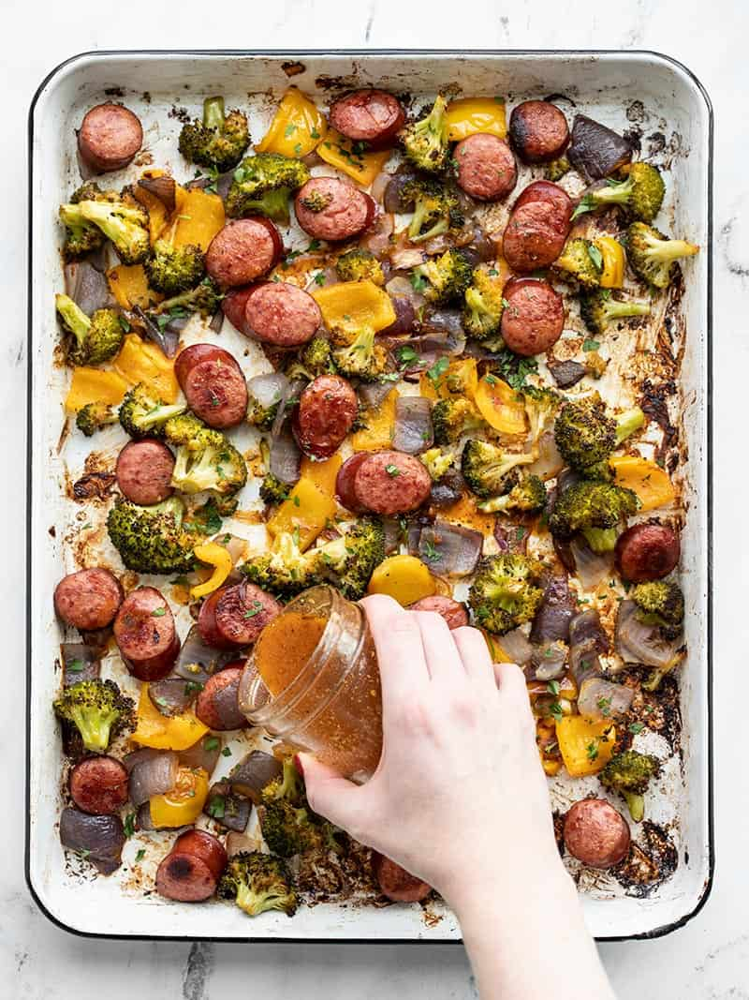

Smoky Roasted Sausage and Vegetables

A beautiful sausage dish bursting with colour and nutrients.
With only an hour you can make this delicious meal
Ingredients
- 1/4 cup olive oil ($0.64)
- 2 Tbsp red wine vinegar ($0.20)
- 1 tsp coarse deli mustard (or Dijon) ($0.08)
- 1/4 tsp garlic powder ($0.02)
- 1/4 tsp dried oregano ($0.02)
- 1/2 tsp smoked paprika ($0.05)
- 1/4 tsp salt ($0.02)
- freshly cracked black pepper ($0.03)
- 1/4 tsp sugar ($0.02)
- 12 oz. smoked sausage ($2.75)
- 1 lb. broccoli crown ($1.69)
- 1 bell pepper (any color) ($1.00)
- 1 red onion ($0.44)
Steps
- Preheat the oven to 400ºF. Line a large baking sheet with parchment paper.
- In a small bowl or jar combine the ingredients for the vinaigrette (olive oil, red wine vinegar, mustard, garlic powder, dried oregano, smoked paprika, salt, pepper, and sugar). Whisk the ingredients together or close the jar and shake until combined. Set the vinaigrette aside.
- Slice the smoked sausage into 1/2-inch medallions. Cut the broccoli into small florets. Dice the bell pepper and onion into 1-inch pieces. Place the sausage, broccoli, bell pepper, and onion onto the baking sheet.
- Drizzle 2 Tbsp of the vinaigrette over the sausage and vegetables and toss to coat.
- Roast the vegetables in the fully preheated oven for 35-40 minutes, or until they're browned on the edges, stirring once half way through.
- While the sausage and vegetables are roasting, cook the rice. Add the rice and 2 cups water to a sauce pot. Place a lid on the pot and bring it up to a boil over high heat. Once boiling, turn the heat down to low and let simmer for 15 minutes. After 15 minutes, turn the heat off and let it rest, undisturbed, lid in place, for an additional 5 minutes. Fluff with a fork just before serving.
- After the sausage and vegetables have finished roasting, add half of the remaining vinaigrette and toss to coat. Season with an extra pinch of salt and pepper if needed.
- To serving, add about 3/4 cup rice to each bowl or container along with 1/4 of the roasted sausage and vegetables. Drizzle another spoonful of the vinaigrette over top, then finish with a sprinkle of fresh parsley.